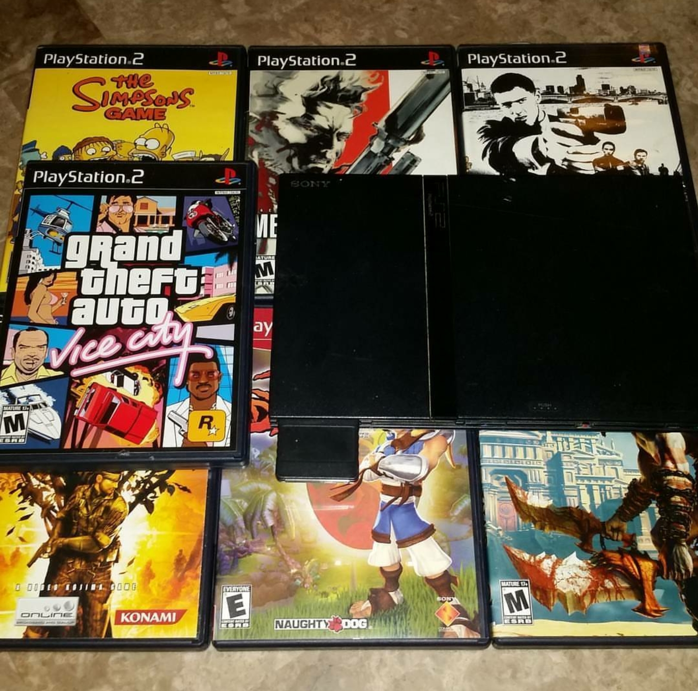
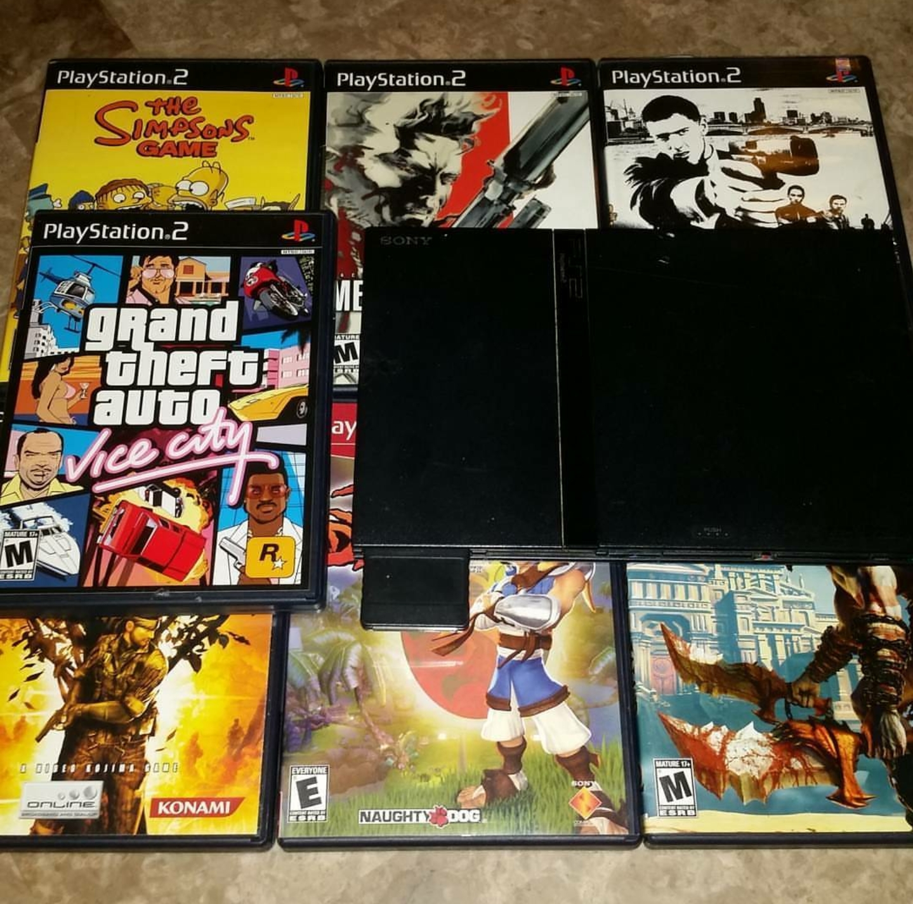

Hey Everyone! PlayStation Reviews
Why I love PlayStation
 

I grew up with PlayStation , I always loved playing Crash Bandicoot . I always say that Crash Bandicoot is like the Mario of PlayStation, or should I say the Crash of Nintendo. I always enjoyed playing the PlayStation exclusives, I feel like it is Sony who makes the better games. I played games like God of War, Jak and Daxter, The Last of Us and Uncharted. I am also a fan of the PlayStation controller and I appreciate the fact that the PS4 controller has a touch pad on it. I am always gonna be on #teamPlayStation!
The Last of Us
The Last of Us is a near-perfect analog for The Road, a literary masterpiece written by Neil Druckmann . Both present a hopeless, post-apocalyptic situation navigated by two characters – an adult and a child – with nothing but absolute despair surrounding them. Like The Road, The Last of Us is perpetually dangerous and unpredictable, and like The Road, what happened to get society to a point of rapid decay isn’t the focus. It’s the story of the characters at hand, and those characters alone, at the center of both plots. The beauty of The Last of Us when compared to The Road, however, is that it’s fully interactive, complete with all of the vulnerability, uncertainty and perpetual insecurity such a situation inherently provides. In this game, you as the protagonist have to kill zombies and any other people that gets in your way has to get Ellie, the key to the cure to the fireflies. The Last of Us seamlessly intertwines satisfying, choice-based gameplay with a stellar narrative. It never slows down, it never lets up, and frankly, it never disappoints. It’s PlayStation 3’s best exclusive, and the entire experience, from start to finish, is remarkable. I lost myself in Naughty Dog’s vision of a pandemic-ridden United States, in the characters that populate this unfortunate wasteland, and in their individual stories. The 300 hours I spent playing through the campaign are among the most memorable I’ve ever spent with a game.
Beyond Two Souls
Beyond Two Souls is directed and written by David Cage. The game is about a girl name Jodie and she is kept in a lab as a lab rat but she is treated like an ordinary girl, it's just that her room has cameras and she is being watched daily to see strange behavior from her. The reason for this is because she has something strange in her. She has something like a spirit in which she can only speak to. The spirit is named Aiden and Aiden does what he feels like, sometimes Aiden would follow Jodie’s order but sometimes Aiden does things on his own. Both Jodie and Aiden are playable. Jodie grew up being observed by scientists until Jodie’s strange power was acknowledge by the CIA because they realized that Jodie and Aiden could work together to get missions done, and that is what they have done. The was great but it has a bit of a problem. On the PS3 version, the chapters are not in order, it can go from Jodie being an a adult, to a little girl, to a teenager in multiple events. That kinda confused me a bit and I did not like that. But on the PS4 version, they have a mode in which you can play the chronological version below the intended version on PS3. The game had a deep story and the choices you make can affect the flow of the story. I rate the game 7/10 only because I did not like the PS3 version
Crash Bandicoot
At one time, Crash Bandicoot was the face of the PlayStation brand, but through licensing headaches and the creation of other characters, the spunky star hasn’t quite gone on to fill the role of Nintendo’s Mario or Microsoft’s Master Chief. However, the hero’s titular game remains a signature PlayStation classic that served as a launching point for Naughty Dog’s climb to greatness, and it went on to inspire and entertain many with its memorable visuals and 3D platforming. Is it still as desirable and appealing as a freshly picked Wumpa Fruit, though – or has the game’s charm become more bland and stale after all of these years? When the protagonist comes, er, crashing in on the title screen, it’s immediately apparent how zany and colourful the art direction for this game is – especially as you move on through the early jungle-themed levels. Oversized foliage is presented in all of the colours of the rainbow; primitive, wooden fortresses and dwellings are decorated with tribal flair, and even the enemies add to the settings, such as giant man-eating plants, boars, snakes, and other fitting wildlife. It has trick puzzles to solve in each stage but it can get something to get used to. Things take a turn for the stranger as you progress through the game and make it to Neo Cortex’s castle, which will have you drastically transitioning to levels in laboratories filled with hazardous chemicals to underground caverns, with ancient stone structures. It may be nonsensical, but this varied tour is one worth taking.